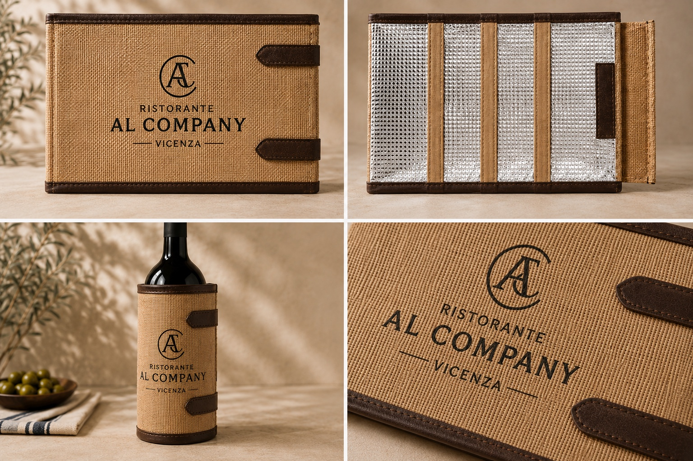
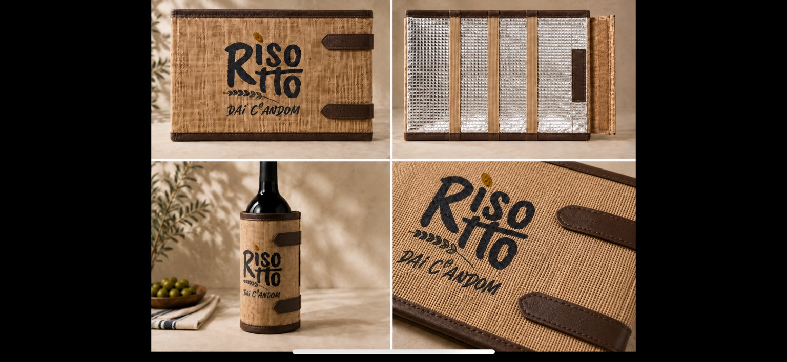

Collezione La Mutina
Custom
Una soluzione sviluppata attorno all’identità di cantine, ristoranti, hotel ed eventi.

Il prodotto
Il progetto prende la forma del tuo brand.
Partiamo dalle proporzioni La Mutina e sviluppiamo insieme logo, colori, bordature, grafica e configurazione del prodotto. Nell’immagine la versione è personalizzata per Ristorante Al Company Vicenza. Nella galleria sottostante usiamo ulteriori rendering reali del progetto per mostrare come il prodotto possa adattarsi a diversi loghi e finiture, sempre rispettando la costruzione effettiva.
Logo frontaleStampa o applicazione coordinata
FinitureJuta naturale o bordature premium
PaletteColori coerenti con il brand
CampionaturaSviluppo personalizzato su richiesta
Esempi di personalizzazione
Loghi e varianti reali.
Alcuni esempi sviluppati sul modello Easy e Premium per mostrare come il prodotto possa adattarsi a identità diverse.

la RisotteriaVersione Easy in juta naturale.

Ristorante Al CompanyVersione premium con bordature scure.

Risotto dai CandomProposta personalizzata su base premium.

Risotto White WineVersione Premium con pannello gel interno.